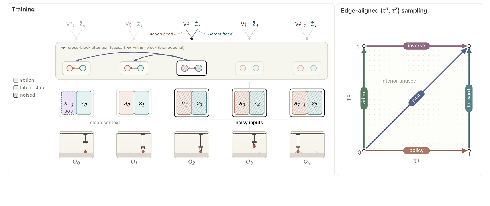
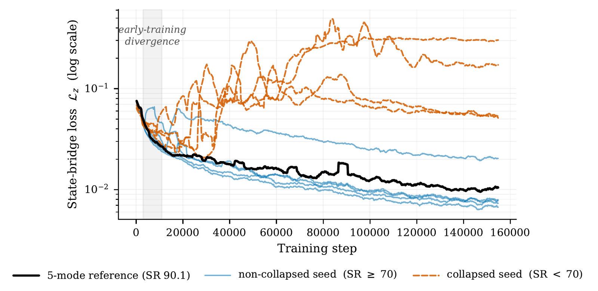

Joint-Embedding Predictive Architectures (JEPAs) underpin a growing family of latent world models for control from raw pixels, but every existing JEPA world model commits at training time to a single inference paradigm: either trajectory optimisation in a learned dynamics model, or direct behaviour cloning. A single checkpoint that serves both would defer this choice to inference, when deployment constraints (rollout cost, observation accessibility) determine which path wins. We present Qantara, an end-to-end JEPA whose joint training objective pairs a Brownian-bridge interpolant between consecutive clean latents on the state axis with noise-to-data flow matching on the action axis. The same checkpoint serves three inference paradigms without retraining: latent planning, behaviour-cloning action sampling, and inverse dynamics, which we query through a video–inverse composition that first predicts the next latent without action conditioning, then extracts the action. Training concentrates mass on the edges of the (action-time, state-time) noise square, where inference queries the predictor: replacing it with uniform interior sampling drops Push-T planning from 90.1 to 53.3 SR at matched compute. On the LeWM control suite, Qantara reaches a 91.2 SR three-train-seed average and sets new SOTA on OGBench-Cube (+7.7 SR over DINO-WM, +19.7 over LeWM). From the same weights, the behaviour-cloning and video–inverse paths reach 82–83 SR on Push-T and 71–73 SR on Cube. These results move JEPA world models from single-paradigm planners to multi-paradigm controllers.
Qantara trains a single causal transformer over interleaved action and latent-state tokens. On the state axis it learns a Brownian-bridge interpolant between consecutive clean latents; on the action axis it learns noise-to-data flow matching. The two noise levels (τa, τz) are sampled on the edges of the unit square, exactly the edges each inference paradigm queries at test time. The interior of the square is never used.

Because deployment constraints (rollout budget, whether goal observations are available) differ at test time, Qantara defers the choice of inference path to inference. The same weights serve:
CEM trajectory optimisation in the learned latent dynamics, the headline goal-conditioned planner.
Goal-blind action sampling straight from the policy head: no rollout, cheapest inference.
Predict the next latent without action conditioning, then extract the action via inverse dynamics.
On the LeWM goal-conditioned planning suite, Qantara's latent planner reaches a 91.2 SR three-train-seed average and sets new state of the art on Cube and Reacher.
| Method | Push-T | Two-Room | Cube | Reacher | Avg |
|---|---|---|---|---|---|
| PLDM | 78.0 | 97.0 | 65.0 | 78.0 | 79.5 |
| DINO-WM | 74.0 | 100.0 | 86.0 | 79.0 | 84.8 |
| LeWM (our repro) | 92.3 | 89.9 | 76.7 | 64.3 | 80.8 |
| Qantara (latent planning) | 90.1 | 100.0 | 93.7 | 80.9 | 91.2 |
Goal-conditioned planning success rate (%), mean over 3 training seeds; bold = unique column-best. Qantara sets new SOTA on Cube (+7.7 over DINO-WM, +19.7 over LeWM) and Reacher (+1.9 over DINO-WM), ties DINO-WM at 100.0 on Two-Room, and trails LeWM by 2.2 SR on Push-T. From the same weights, the behaviour-cloning and video-inverse paths reach 82–83 SR on Push-T and 71–73 SR on Cube.

@misc{qantara2026,
title = {Qantara: Bridge-Flow Training for Multi-Paradigm JEPA Control},
author = {Rakhimov, Ruslan and Bredis, George and Maksyuta, Yuriy and Gavrilov, Daniil},
year = {2026},
note = {ICML 2026 Workshop on Decision-Making from Offline Datasets to
Online Adaptation (DEMO); non-archival},
eprint = {2607.04978},
archivePrefix = {arXiv},
primaryClass = {cs.LG},
url = {https://arxiv.org/abs/2607.04978}
}
Built on top of Le-WM and the
stable_worldmodel / stable_pretraining libraries.